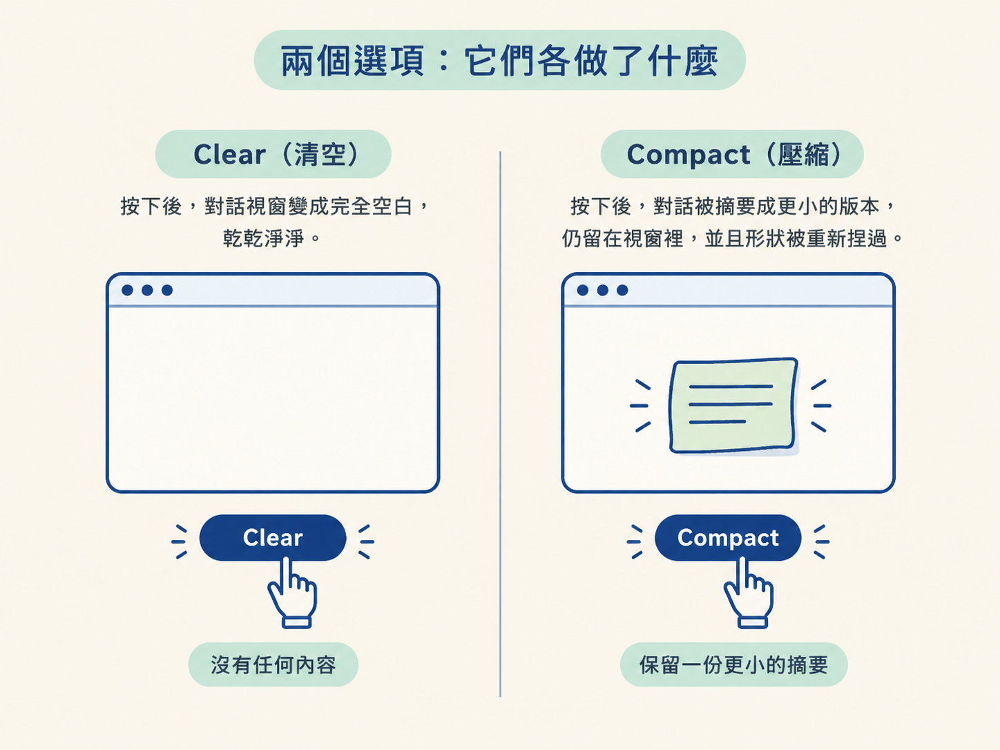
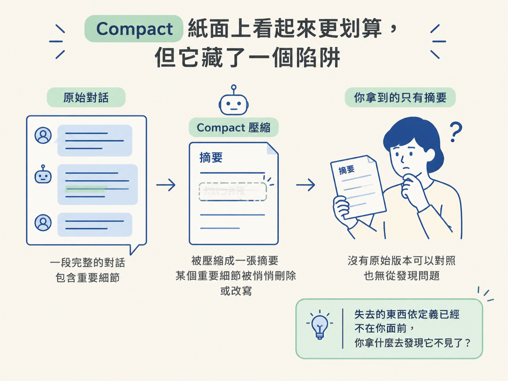
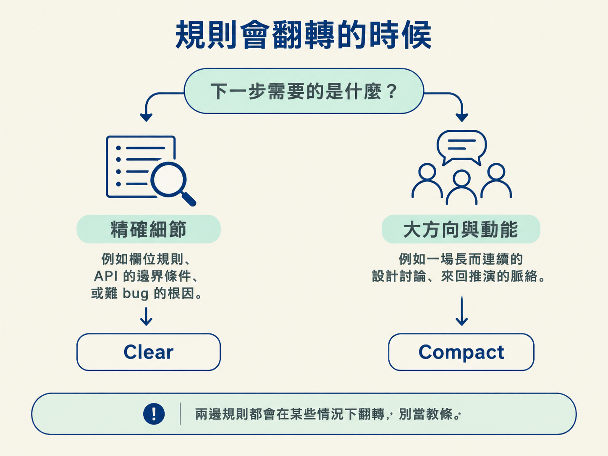

分得清 clear 與 compact 各自做了什麼，並用「下一步是否依賴先前的精確細節」這條判準，在那一秒鐘選對重置方式。
前面兩節把問題講清楚了：window 會滿，而且在你覺得滿之前就開始掉品質；一個 session 飄過無關主題，還會被殘留的內容干擾注意力。所以你知道該重置了。
但接下來這一步，很多人做錯：重置不是一個動作，它是兩個。你面前其實有兩個按鈕，一個叫 clear，一個叫 compact。它們處理的是同一個底層問題（window 裡塞了太多東西），做法卻完全不一樣，而按錯的代價，往往比你想的高。
想像你正卡在一個跑了很久的 session 裡，對話又長又亂。你隱約覺得該重置了，手卻懸在半空：直接清空，還是讓它壓縮一下、把摘要留著？這一節就是要把這兩顆按鈕講透，讓你在那一秒知道該按哪個。
Clear（清空）把 window 完全抹掉：對話變成空的，什麼都不帶過來，你可以從零開始下一個 prompt。之後 window 裡有什麼？在你親手放東西進去之前，什麼都沒有。
Compact（壓縮）走的是另一條路：它把當前這段對話摘要成一個精簡版本，讓那份摘要留在 window 裡、帶著往前走。它不是空的，只是變小了，而且形狀也被重新捏過。

| 面向 | Clear（清空） | Compact（壓縮） |
|---|---|---|
| 重置之後 window 的狀態 | 完全空白 | 留著一份摘要，更小但被重塑過 |
| 你事後知道裡面有什麼嗎 | 知道，就是什麼都沒有 | 不一定，摘要由模型產生 |
| 你可以先審查嗎 | 沒有東西需要審查 | 不行，在它變成你的新 context 前你看不到 |
| 最大的優點 | 可預期，直接移除不確定性 | 效率高，保留了脈絡的形狀 |
| 最大的風險 | 先前的一切都得重講 | 重要細節可能被壓掉，或被悄悄改了意思 |
先承認 compact 的吸引力：東西留著、只是縮小，既省空間又沒斷氣，聽起來是比較聰明的做法。
但這裡有個關鍵的陷阱：那份摘要由模型產生，而你沒有機會在它變成你的新 context 之前先看一眼。
也就是說，如果某個重要的東西被壓掉了，或者被微妙地改寫到意思變了，你不一定察覺得到。為什麼？因為那個失去的東西，依定義，已經不在你面前了。你要拿什麼去對照、去發現它不見了？你手上只剩那份被改寫過的摘要。

把 clear 擺在一起對比就清楚了。clear 沒有這種風險，因為它根本沒有東西可以跟丟。你確切知道 window 裡有什麼：在你放東西進去之前，是完全空的。所以有一句很好記的話：clear 可預期，因為它移除了不確定性；compact 很有效率，但那是拿可預期性去換方便。
要把這個抉擇變成當場能用的工具，不用背情境清單，只要問自己一個問題：
「我下一步需要的，是先前的精確細節，還是只要大方向與動能？」
答案是「精確細節」，像是某條具體的欄位規則、某個 API 的邊界條件、某個難 bug 的根因，那就偏向 clear，然後自己把那兩三件關鍵的事重講一次。親口重述，比信任一份摘要把它們留住更可靠。
答案是「大方向與動能」，你正深陷一個長而連續的任務，之前討論的脈絡本身就是價值，那就偏向 compact。這時停下來從頭解釋一切，恐怕比承擔一份有點失真的摘要更花時間。
具體來說，碰到下面任何一種情況，按 clear：
你要開始一個真正新的、跟剛才無關的任務。既然無關，把舊的清掉最乾淨，順手也解掉了上一節講的注意力干擾。
這個 session 已經飄掉了，而且你已經看到 repeating、forgetting、contradicting 這些行為。這就是「環境壞了，重開一個」的訊號。
還有，當你寧可重講那兩三個真正重要的事實，也不願信任摘要把它們留住的時候。這種直覺通常是對的，尤其在細節一旦錯就全盤皆錯的任務上。
另一邊，碰到這幾種情況，按 compact：
你正深陷一個又長又連續的任務，而停下來重新解釋一切的成本，比承擔一份有點失真的摘要更高。
對話歷史本身對接下來有價值的時候。例如你們正在進行一場很長的設計討論，那些來回推演的過程，就是後面要用的材料。
當失去那場討論的「形狀」，比一份稍微不完美的摘要更痛的時候。有些決定的價值不只在結論，還在它是怎麼一步步推出來的。
兩邊的規則都記牢了，還得記得它們什麼時候不成立，否則就會用成教條。
「compact 永遠比較省」是錯的。當精確細節是關鍵時（一個難 bug 的根因、一個 API 的邊界條件），省下的重講時間，遠遠比不上一次失真摘要帶來的除錯成本。你省下幾分鐘的重述，可能換來幾小時的「它怎麼又做錯了」。
反過來，「clear 永遠最安全」也是錯的。在一場很長的設計討論中途直接 clear，你會失去整個推演過程和每一個否決理由，重講的成本高到不合理。這種時候，「安全」其實是一種浪費。
所以真正的模式不是「哪個比較好」，而是：下一步越依賴先前的精確細節，越該靠向 clear；越依賴大方向與動能，越該用 compact。

重置有兩種：clear 把 window 清空，可預期，但一切要重講；compact 把對話摘要後帶著走，效率高，但摘要由模型產生、你無法事先審查，重要細節可能被壓掉或悄悄改義。判準只有一句：下一步需要精確細節就用 clear，需要大方向與動能就用 compact。兩邊的規則都會在某些情況下翻轉，別把它們當教條。
有了這套規則，你已經能在那一秒知道該按哪顆按鈕。不過還有一個更根本的問題沒回答：什麼東西值得留、什麼該清？為什麼有些活動會把 window 燒得特別凶？下一節把整個 session 攤成一本帳，講清楚 token 到底貴在哪、便宜在哪，那會讓你前面每一個決定，都多一層數字上的底氣。